出发
她工作、攒钱，买下人生第一辆车。汽车陪她开始旅行、摄影和看更远的世界。后来她得到了很好的机会，决定离开，汽车进入下一段旅程。
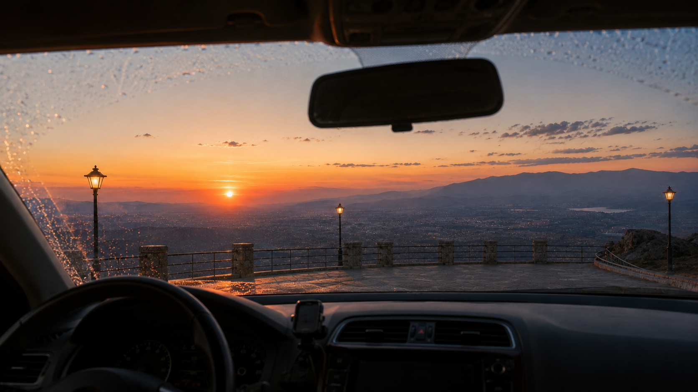
工作流：
从叙事拆解到资产建立，
通过关键帧与结构化 Prompt 控制生成，
再针对失控变量完成迭代与成片。
《下一段旅程》是一部以汽车第一视角展开的 AIGC
原创叙事短片。故事围绕同一辆汽车与三任车主的相遇与离开展开，通过旅行、工作、家庭与成长，让汽车作为沉默的见证者串联三段人生轨迹。
项目从创意构思、剧本与分镜设计，到角色与车辆资产建立、AI
图像及视频生成、镜头迭代与后期剪辑均由个人独立完成。制作重点落在角色与物体一致性、复杂空间关系、结构化提示词设计，以及生成结果的问题诊断与迭代控制
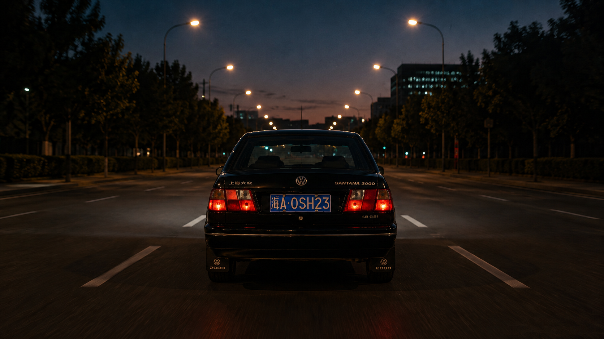
THE CAR AS WITNESS
故事没有把汽车作为单纯的交通工具，而是让它持续经历不同的人，见证他们离开、相遇与重新出发。
她工作、攒钱，买下人生第一辆车。汽车陪她开始旅行、摄影和看更远的世界。后来她得到了很好的机会，决定离开，汽车进入下一段旅程。
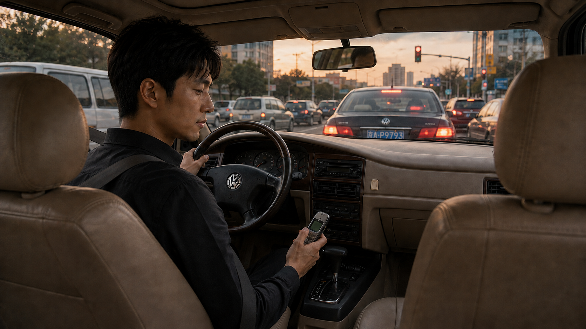
02 · SECOND OWNER汽车成为他在城市生活中的第一个“根基”。从迷茫到工作安稳、爱情幸福、家庭美满，汽车陪伴他走过一段真实的人生旅程。
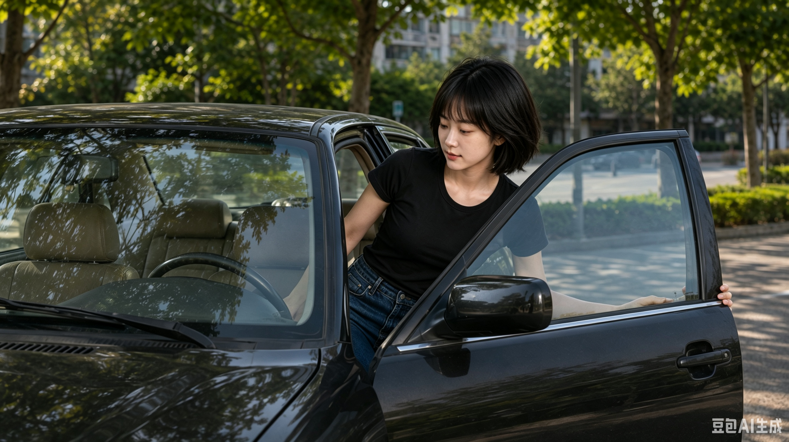
03 · NEXT GENERATION多年以后，父亲把汽车交给已经长大的女儿。她带着自己的迷茫重新出发，寻找自己的方向。
根据真实年代物品，服饰，行为习惯，构建真实资产，保证影片真实性。
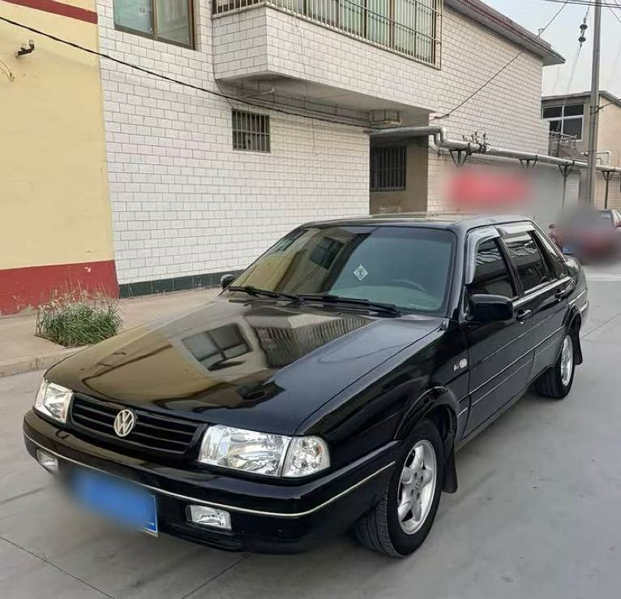
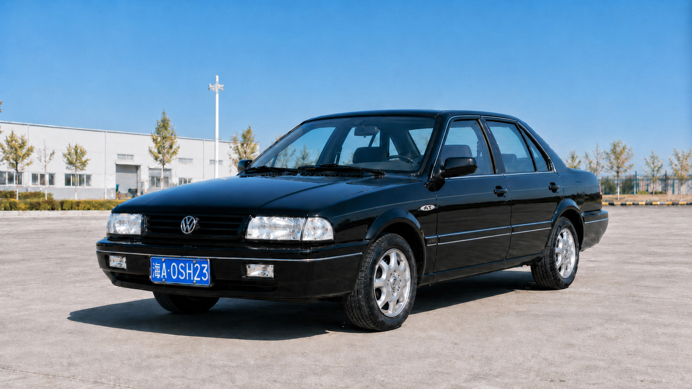
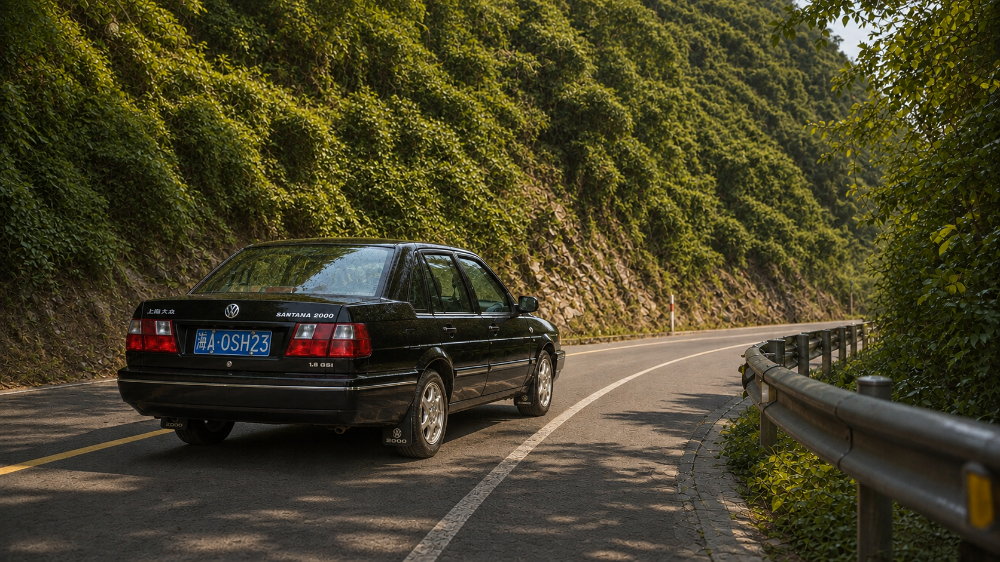
同一角色，不同年龄，保持身份连续性。
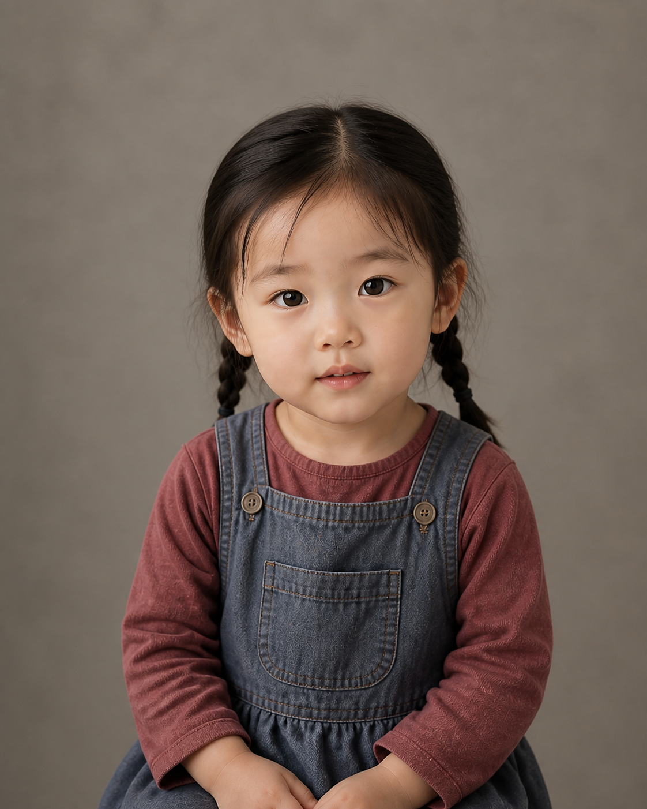
3岁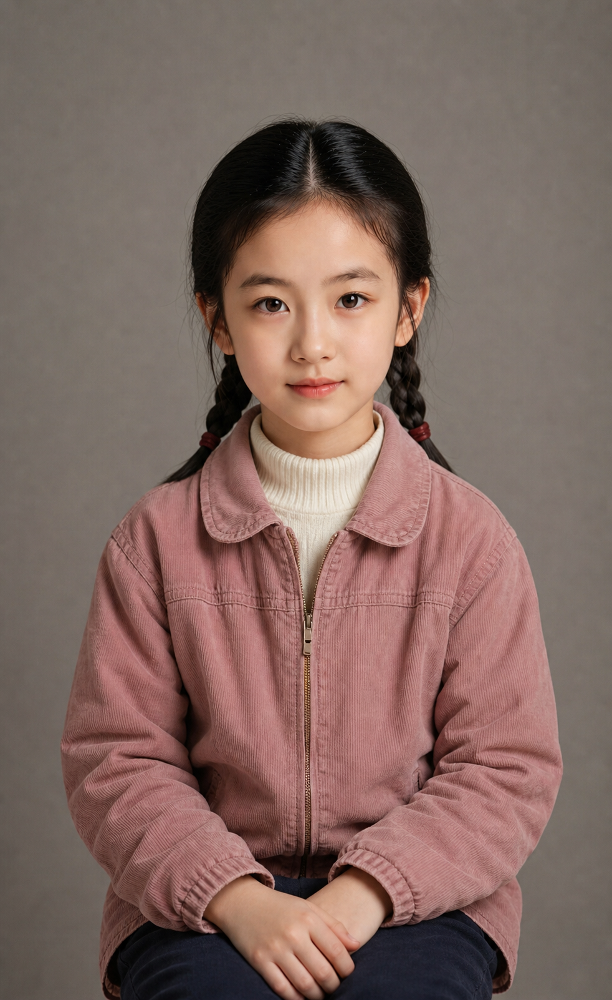
7岁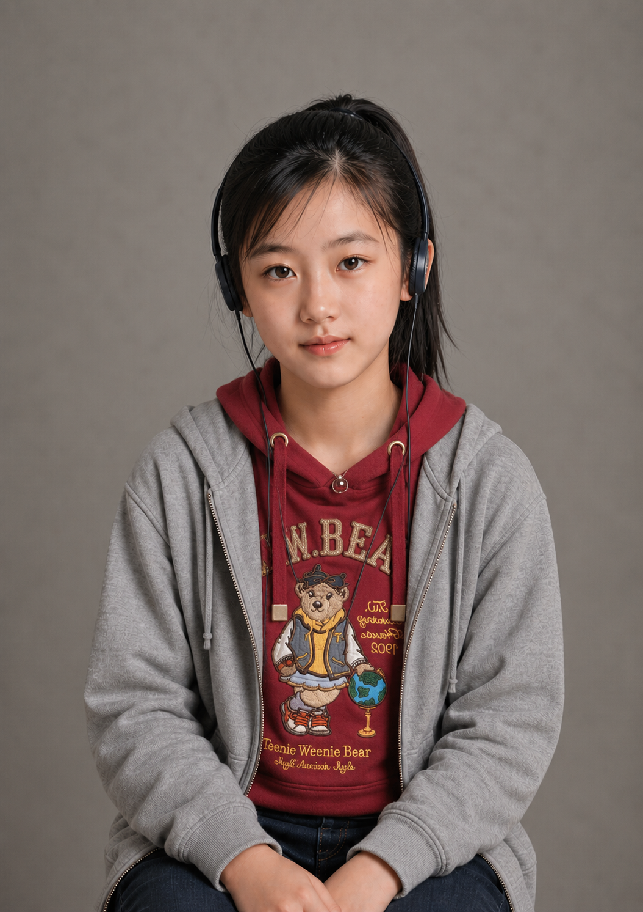
14岁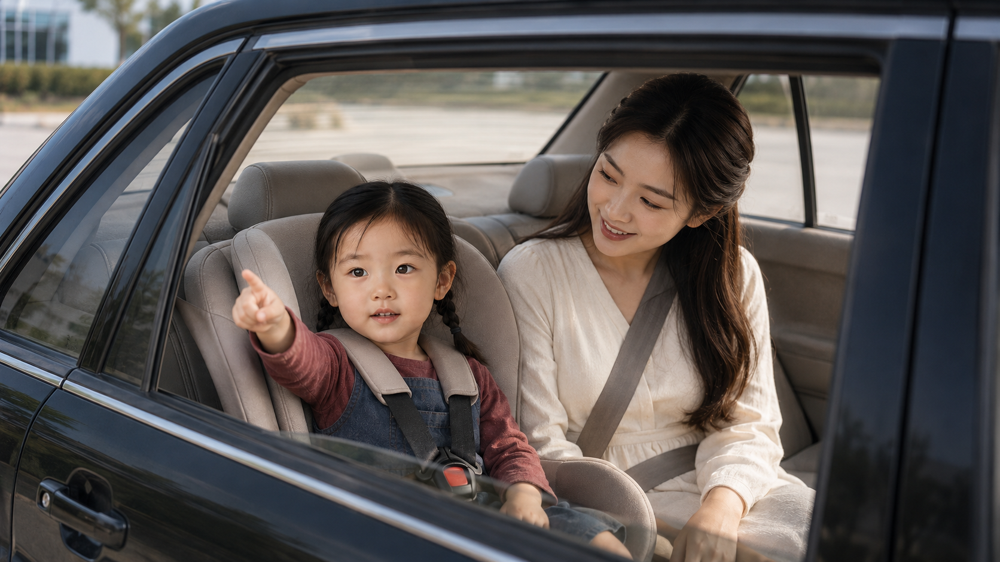
通过年龄资产先锁定身份特征，再把角色放入不同年代、服装、表演与镜头环境中。
SPATIAL RELATIONSHIP CONTROL
如何让车顶盖板准确落入车身，
而不是只做到“看起来在下降”？
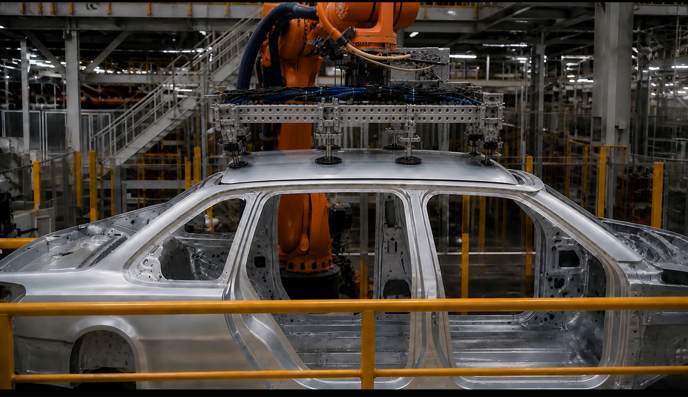
先让顶盖的长度、宽度、曲线与车身开口建立准确对应。
把视频任务收窄为保持水平的短距离垂直下降。
锁定机位、透视、车身、吊具、吸盘与工厂背景。
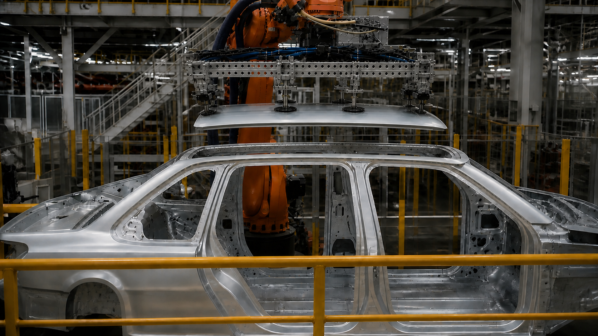
先解决关键帧中的空间关系，
再控制视频中的运动。
STRUCTURED PROMPT DESIGN
“一个女孩跑向公交车的镜头，
实际需要同时控制多少变量？”
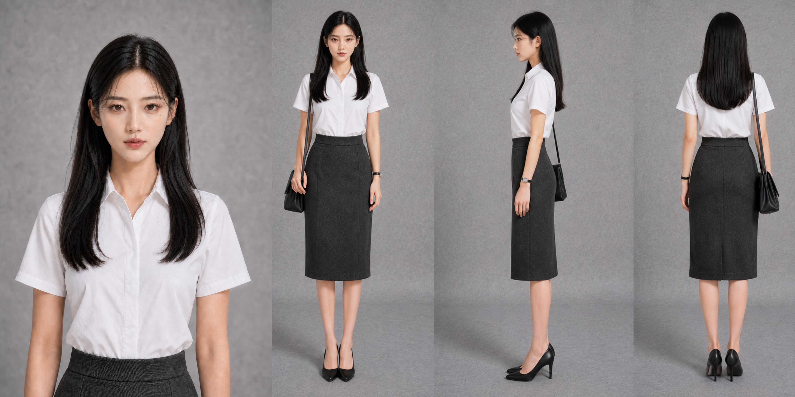
CHARACTER REFERENCE
复杂 Prompt 的重点不是
写得更长，
而是减少歧义。
1998年清晨的中国城市街道，真人电影实拍质感。
女孩沿着人行道向前方公交车和公交站快步小跑，试图赶上即将驶离的公交车。
女孩始终在人行道上奔跑，不进入机动车道，不跨越路沿石。
她穿着白色短袖衬衫、深灰色及膝铅笔裙、黑色尖头高跟鞋，披着自然顺直的黑色长发，肩上背着黑色通勤包。严格保持人物长相、五官、发型、服饰和身体比例不变。
女孩采用穿着高跟鞋和铅笔裙时真实、克制的小步快跑。步幅较小，脚步轻而快速，身体基本保持直立，只略微向前倾。膝盖自然弯曲，鞋跟和前脚掌依次接触人行道，脚踝保持稳定，不做运动员式冲刺或大幅跳跃。
她一边小跑，一边看着前方公交车司机。抬起的右手保持在肩部附近，手肘自然弯曲，掌心朝向司机，礼貌而急切地示意“请等一下”。右手只做一至两次轻微、克制的招手动作，不要用力挥舞。左手自然握住肩包带，防止通勤包随着奔跑大幅晃动。
女孩沿着人行道的清晰通道向公交站方向移动，绕开中央树木，从树木后方通过。她逐渐接近公交站，但在镜头结束前暂时不登车。
黑色长发随着小步奔跑轻微向后摆动，白色衬衫和裙摆产生克制、真实的布料变化，肩包只做小幅度的上下晃动。女孩表情有一点着急和轻微喘息，但仍保持自然、优雅和克制，不狼狈，不夸张。
公交车保持1998年前后的方正车身、蓝白配色和机械质感。公交车缓慢减速并在站点附近停住，司机注意到女孩的手势，车辆不要立即驶离。车轮只产生轻微缓慢运动，车身有自然的发动机振动。站牌、自行车、路人和商铺保持稳定。
镜头以固定的电影机位拍摄，但不要明显推近、变焦或改变视角。保持清晨淡金色阳光、树影、轻微晨雾、街道景深和1998年城市环境稳定。真实亚洲女性皮肤，真实头发和衣料细节，轻微自然运动模糊，克制的电影色彩，像真人演员在真实街道拍摄。
音频只保留清晨街道环境声、高跟鞋快速落在人行道上的脚步声、轻微呼吸声、衣物与肩包摩擦声、自行车经过声和公交车发动机怠速声。不要背景音乐，不要BGM，不要对白。禁止背景音乐，禁止BGM，禁止对白，禁止喊叫和口型变化。
禁止女孩跑进机动车道，禁止跨越路沿石，禁止跑到公交车正前方，禁止被车辆撞到；禁止人物被树干、站牌、自行车或行人遮挡；禁止人物突然消失、穿过树木或瞬移。
禁止大步冲刺、跳跃、双脚长时间离地、身体剧烈前倾、夸张摆臂和高举双手；禁止狼狈奔跑、摔倒、崴脚和鞋子脱落；禁止裙摆大幅飞起，禁止肩包疯狂甩动。
禁止改变人物长相、五官、年龄、肤色、发型和服饰；禁止白衬衫变色、裙子变短、出现裤装或运动鞋；禁止手指增生、手掌变形、手腕扭曲、腿部变形、脚踝异常和高跟鞋融化。
禁止公交车突然加速、倒车、改变车型或变成现代公交车；禁止出现LED站牌、智能手机、现代汽车和现代广告；禁止改变街道树木以及其他任何畸变，禁止镜头剧烈移动、快速推拉、摇晃、旋转、变焦和切镜；禁止背景变形、树木移动、光线闪烁、字幕和水印。
不是告诉 AI “往哪动”，
而是告诉它“相对于什么，怎么动”。
以图1车内遮阳板画面为首帧，以图2女生定妆照作为人物造型参考。生成4秒、16:9、写实电影感视频。镜头完全固定，无推拉、无摇移、无缩放、无抖动。保持图1中的车顶、遮阳板、转轴、固定卡扣、照片及车内结构完全一致，不改变物体位置、材质和比例。画面开始后约0.5秒，女孩的一只纤细手掌从右下方自然伸入。手部肤色、体态和造型参照图2：白皙自然肤色，短而干净的自然色指甲，不漏袖口，不戴首饰手表。只出现一只手、少量手腕，不出现女孩的脸、头发、身体或另一只手。女孩用手指自然托住遮阳板下沿，稍作停顿后，将遮阳板平稳拉回向上推回车顶。遮阳板严格围绕原有顶部转轴旋转，运动速度均匀，符合真实汽车遮阳板的重量感和机械结构。贴在遮阳板上的照片保持牢固，随遮阳板同步翻转，不滑动、不变形、不脱落。遮阳板最终贴合车顶并发出轻柔的卡扣声，女孩松手后从右下方自然退出画面。灯光保持自然、柔和。遮阳板收起后，车内亮度产生轻微且符合现实的变化，不出现突然曝光或色温跳变。音效：只保留安静的车内环境声、手指接触遮阳板的轻微布料摩擦声、转轴转动声，以及遮阳板收起时清晰但克制的卡扣声。不要背景音乐，不要配乐，不要人声。负面提示词：人物露脸、头部入镜、身体入镜、第二只手、整条手臂、大面积人物入镜、多余手指、六指、缺指、手指粘连、手部变形、腕部扭曲、手掌穿模、肤色变化、服装变化、配饰变化、遮阳板弯曲变形、遮阳板错误转轴、遮阳板反向运动、动作倒放、动作反复、照片滑动、照片脱落、照片内容变化、车内结构变化、镜头移动、推镜、拉镜、摇镜、缩放、相机抖动、画面闪烁、物体漂浮、动作跳帧、曝光突变、文字、水印、BGM、背景音乐、配乐。
以图1车内遮阳板画面为首帧，以图2女生定妆照作为人物造型参考。生成4秒、16:9、写实电影感视频。镜头完全固定，无推拉、无摇移、无缩放、无抖动。保持图1中的车顶、遮阳板、转轴、固定卡扣、照片及车内结构完全一致，不改变物体位置、材质和比例。画面开始后约0.5秒，女孩的一只纤细手掌从右下方自然伸入。手部肤色、体态和造型参照图2：白皙自然肤色，短而干净的自然色指甲，不漏袖口，不戴首饰手表。只出现一只手、少量手腕，不出现女孩的脸、头发、身体或另一只手。女孩用手指自然托住遮阳板下沿，稍作停顿后，将遮阳板平稳向镜头一侧向上拉然后推回车顶。遮阳板严格围绕原有顶部转轴旋转，运动速度均匀，符合真实汽车遮阳板的重量感和机械结构。贴在遮阳板上的照片保持牢固，随遮阳板同步翻转，不滑动、不变形、不脱落。遮阳板最终贴合车顶并发出轻柔的卡扣声，女孩松手后从右下方自然退出画面。重点方向是把遮阳板合上，这是向上收拢关闭，不是向挡风玻璃外推开，不是向下放低。手掌、手指、手腕和前臂连接自然，遮阳板始终绕车顶铰链旋转，不发生平移动作。动作完成后保持遮阳板贴紧车顶，不再遮挡前方视线。真实物理运动，结构清晰，方向准确，写实摄影质感。灯光保持自然、柔和。遮阳板收起后，车内亮度产生轻微且符合现实的变化，不出现突然曝光或色温跳变。音效：只保留安静的车内环境声、手指接触遮阳板的轻微布料摩擦声、转轴转动声，以及遮阳板收起时清晰但克制的卡扣声。不要背景音乐，不要配乐，不要人声。负面提示词：禁止遮阳板向外推开，向挡风玻璃外移动，向前方推出，向下转动，向下翻折，越关越开，反向动作，方向颠倒，手部穿模，手臂断裂，遮阳板变形，铰链位置错误，物体悬浮，不自然回弹，夸张运动，卡通质感人物露脸、头部入镜、身体入镜、第二只手、整条手臂、大面积人物入镜、多余手指、六指、缺指、手指粘连、手部变形、腕部扭曲、手掌穿模、肤色变化、服装变化、配饰变化、遮阳板弯曲变形、遮阳板错误转轴、遮阳板反向运动、动作倒放、动作反复、照片滑动、照片脱落、照片内容变化、车内结构变化、镜头移动、推镜、拉镜、摇镜、缩放、相机抖动、画面闪烁、物体漂浮、动作跳帧、曝光突变、文字、水印、BGM、背景音乐、配乐。
铰链 = 旋转轴车顶 = 最终位置参照挡风玻璃 = 初始方向参照不要只描述“往哪里动”，而要建立明确的空间参照系。
先建立稳定的视觉约束，再进行生成；
先定位失控变量，再针对问题迭代。
THE NEXT JOURNEY
AIGC 原创叙事短片 · 2026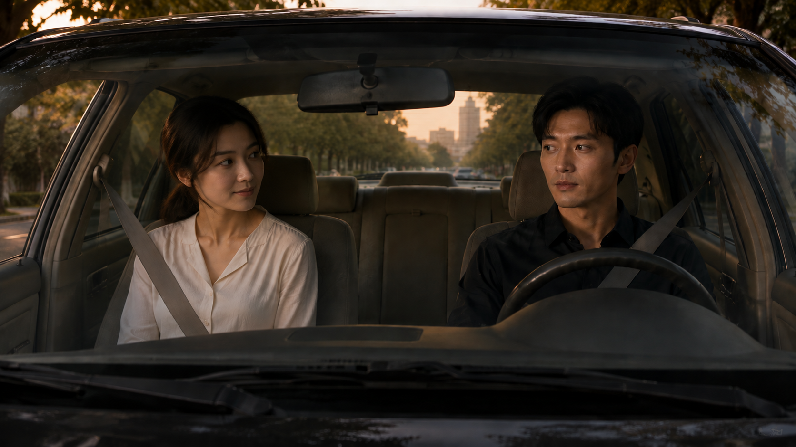
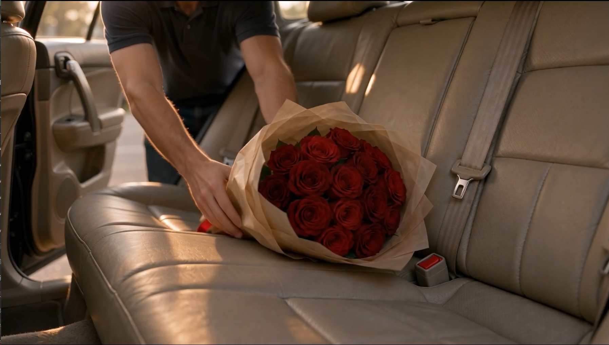

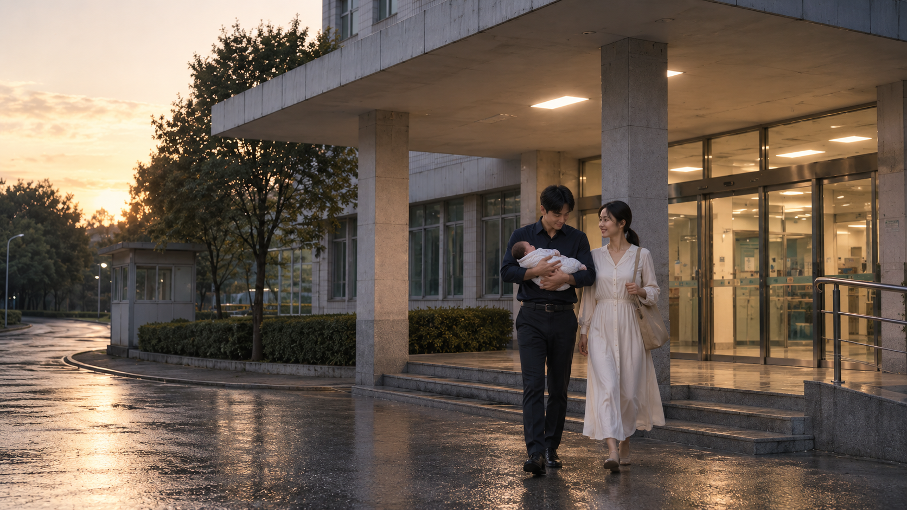
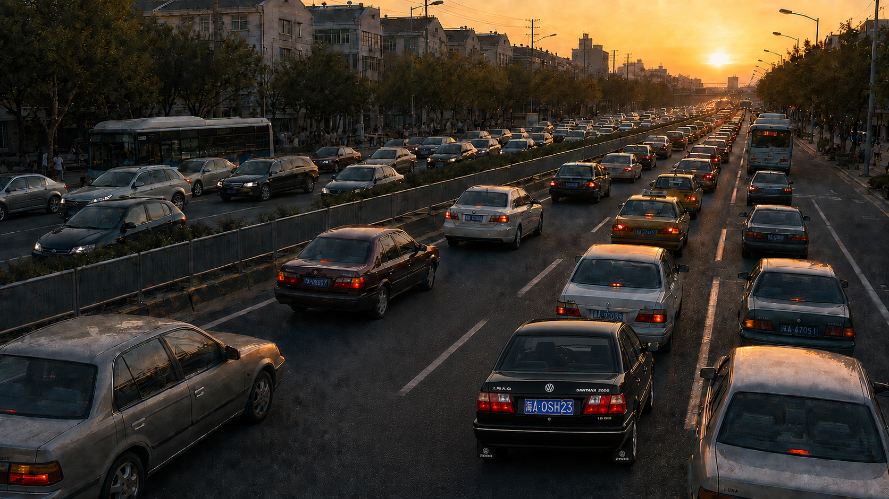
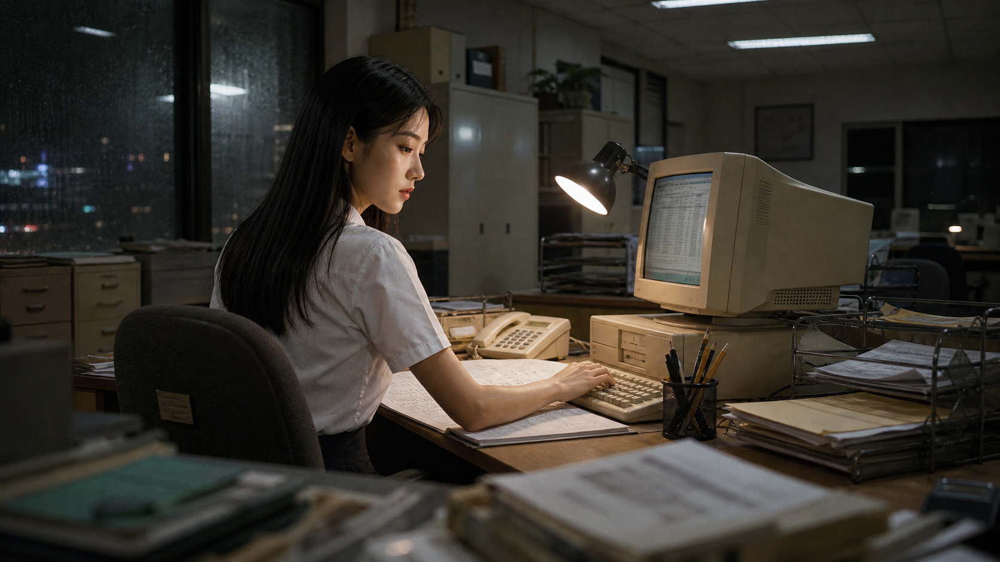
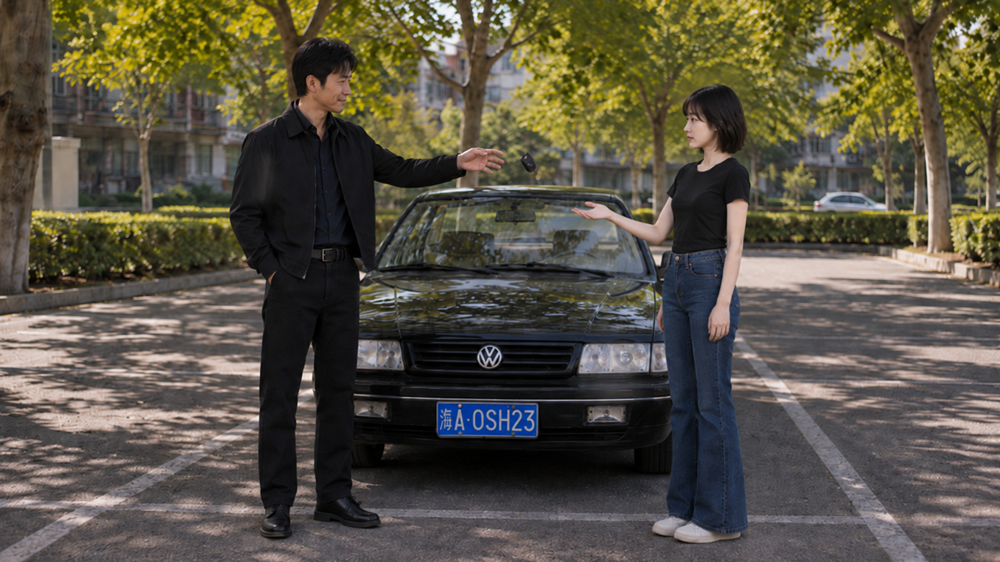